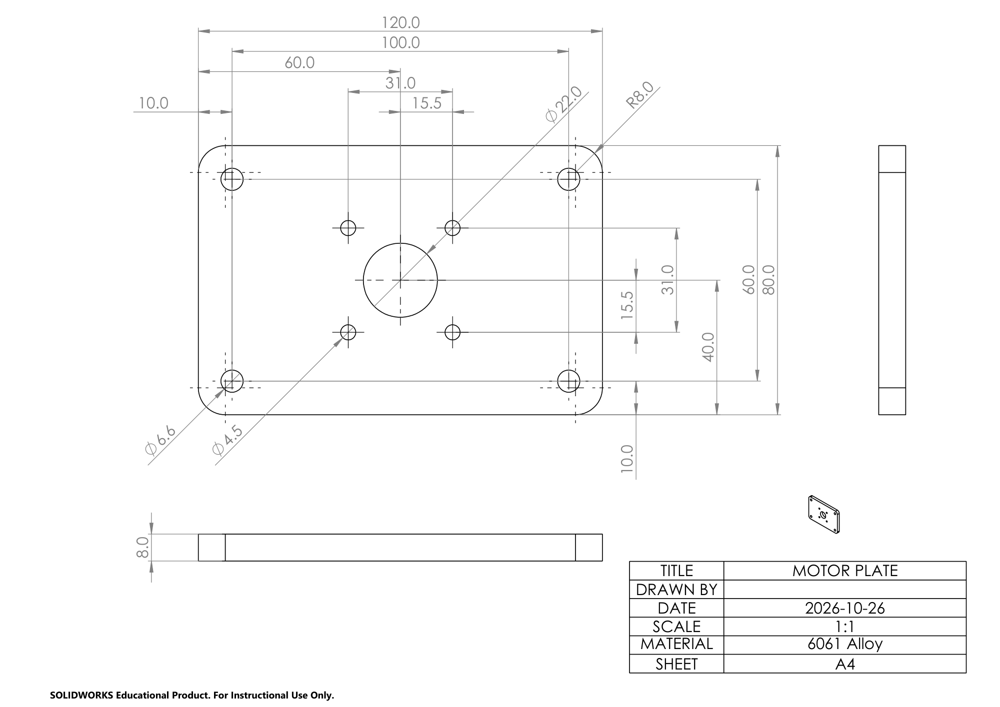
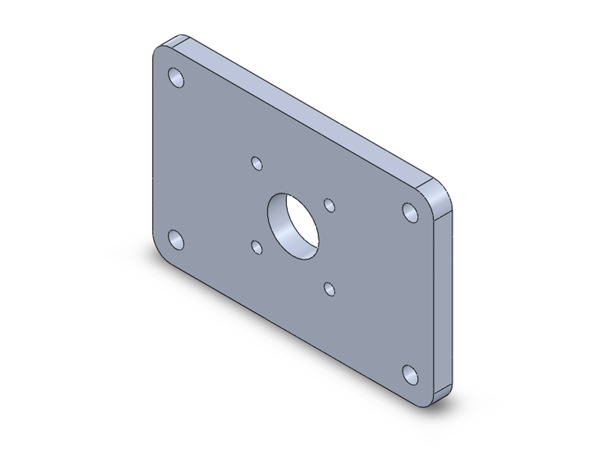
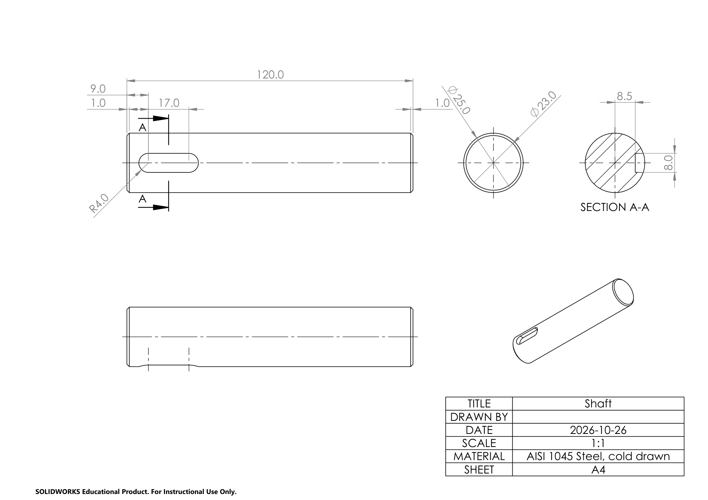
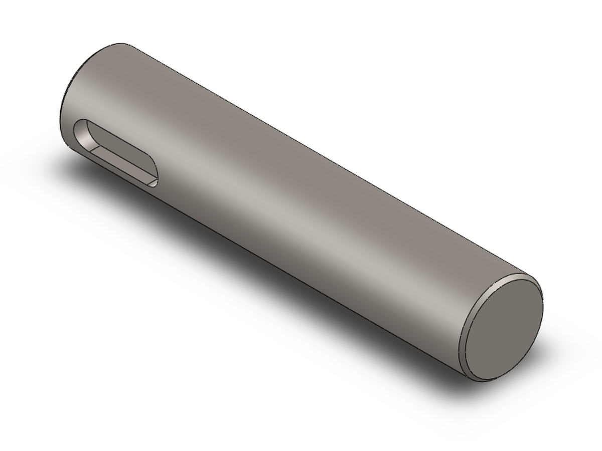

Real conversations: a rough request, the AI's plan, a short answer, and the part it built and measured.
The AI's words are shortened (…), never changed.
A part
Youmake me a plate for a nema 17 motor
Claude Code (Claude Opus)Before I build it, here's a plan with
suggested sizes. …
- Motor mounting holes: 4 × Ø3.4 mm through-holes for M3 screws, on a 31 mm square
pattern …
- Centre bore: Ø22.5 mm through …
- Flat square plate, 70 × 70 × 5 mm …
- Material:
6061 aluminium
- Corner fillets: R5 mm …
- Holes to fix the plate to your frame: 4 × Ø5.5 mm for M5
screws, 8 mm in from each edge …
Are the sizes and material above OK, or should I change any?
Youflat is fine, plain holes. looks good but make it 6mm thick
✓Measured: 70.0 × 70.0 × 6.0 mm, 6061 aluminium, 70.5 g; every sketch fully defined.
A turned part
Youi need a shaft with a keyway
Claude Code (Claude Opus)Before I build anything, here's a
suggested plan. …
- Diameter: Ø20 mm
- Length: 100 mm
- End chamfers: 1 × 45° on both
ends
- Material: AISI 1045 steel
- Key size: 6 × 6 mm, so the keyway is 6 mm wide
- Depth in
shaft: 3.5 mm …
Are these sizes right, or do you have a shaft diameter and length in mind? If the
diameter changes, I'll resize the key to the standard for it.
You25mm dia, 120 long, rest is fine
✓Measured: Ø25.0 × 120.0 mm, the keyway resized to the standard 8 × 4 mm, 456 g.
Sheet metal
Youbracket from sheet metal to hold a sensor
Claude Code (Claude Opus)The size of the bracket depends on the
sensor, so here's a plan with suggested values. …
- Sensor M18 cylindrical proximity sensor …
- Material Aluminium 5052-H32, 1.5 mm sheet
- Width 40 mm …
- Upright leg 50 mm
tall …
- Sensor hole Ø18.5 mm through hole …
Which sensor is it?
Youits an M12 prox sensor. L is fine, rest ok, no drawing
✓Measured: 40 × 50 × 40 mm, a Ø12.5 hole for the M12, flat blank 87.4 × 40 mm, 13.4 g.
An assembly
Youcan you make an assembly, a base plate with 4 standoffs on it
Claude Code (Claude Opus)Before I build it, here's my proposed
plan. Every size below is a suggestion …
- 100 × 80 × 5 mm rectangular plate …
- 4 × Ø3.4 mm through
holes (M3 clearance), one near each corner …
- Round standoff, Ø6 mm outer, 20 mm tall …
- Material:
brass …
Round or hex standoffs?
Yougo, but hex standoffs pls
✓Measured: plate and 4 brass hex standoffs, 8 mates without errors, no interference, 122.0 g.
Sheet metal and its DXF
Youi need a small sheet metal box to put an arduino uno in, with flanges so i can screw it down to a table. also need the flat pattern as dxf for the laser cutter
Claude Code (Claude Opus)Before I build anything, here's what I
suggest. …
Design: an open U-tray with screw-down tabs, made from one piece …
- Material 1.0 mm
aluminium 5052 (or 1.0 mm mild steel)
- Inside width between walls 62 mm (the Uno is 53.4 mm …)
- Wall height 25 mm …
- Mounting tabs 20 mm past each wall end …
- Arduino
holes 4 × Ø3.2 mm (M3) on the standard Uno hole pattern …
The cut outline and holes are on layer 0,
and the bend lines are on a separate BEND layer that your laser software can switch off.
Youlooks good, open tray is fine and no lid. make it 1.5mm mild steel
✓Measured: 114 × 65 × 25 mm, 1.5 mm steel, 120.8 g; flat blank 114 × 110.5 mm, the DXF with its bend lines on their own layer.
A weldment and its cut list
Youcan you make a welded steel frame for a small workbench, like 1200 long 600 deep and 900 high, out of square tube. i need the cut list too so i know what to order
Claude Code (Claude Opus)Before I build it, here's the frame I'd
suggest. …
- Tube: 40 × 40 × 3 square hollow section, mild steel …
- Legs: 4, running the
full height. …
- Lower rails: a second rectangle 150 mm above the floor …
- Joints:
square-cut butt joints, welded. …
What should I change, if anything?
You900 to the top of the steel is right. 40x40x3 is good. put the lower rails at 200 instead of 150, rest looks fine
Claude Code (Claude Opus)I've stopped partway. The profile
library installed with SolidWorks has no 40 × 40 × 3 square tube, and I won't swap in a different size without
your OK. … I'd use BSI RHS 40 × 40 × 3.2: it's the closest to what you'll order …
Youbsi 3.2 is fine
✓Measured: 1200 × 600 × 900 mm, 13 members, 37.0 kg; cut list 4 × 900, 4 × 1120 and 5 × 520 mm of 40 × 40 × 3.2 tube.
A moving assembly and its drawing
Youcan you make me a simple door hinge as an assembly, two leaves and a pin, and it should actually swing
Claude Code (Claude Opus)Before I build anything, here's what I plan
to make. …
- Hinge height (along the pin) 75 mm
- Knuckles 5 knuckles, 15 mm each …
- Pin Ø4 × 75 mm plain pin, 0.2 mm clearance in the hole so it turns freely
…
Optional swing
limit from 0° (closed, leaves face to face) to 180° (open flat), so it can't swing through itself.
Yousizes are fine. yes do the 0-180 limit, and keep the screw holes
Claude Code (Claude Opus)The hinge is built and it swings: leaf B
turns on the pin from closed (0°) to open flat (180°) and stops at both ends. …
Younice. can you also make an assembly drawing of it with a section through the pin, a parts list and balloons, as a pdf
✓Measured: 3 parts, 5 mates without errors, no interference; it swings 0–180° and stops at both ends. The drawing has section A-A, a parts list and balloons 1–3.
From a drawing
Youcan you build this?

→
Claude Code (Claude Opus)I built the motor plate from your drawing
… I measured the finished part against the drawing and everything matches
✓Measured: 71,715.7 mm³, the same volume as the part the drawing was made from.
From a drawing
Youcan you build this?

→
Claude Code (Claude Opus)I built the shaft from your drawing …
✓Measured: 58,121.1 mm³, the same volume as the shaft the drawing was made from.